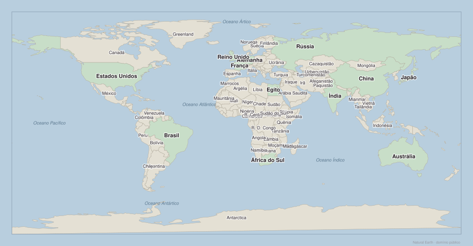
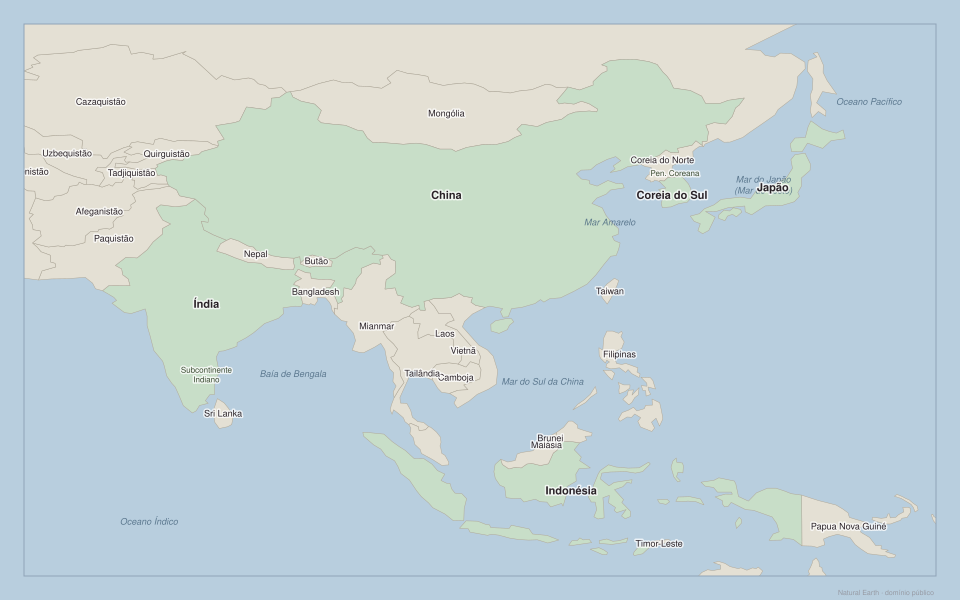

Como ler o mundo no mapa
Países-chave: Brasil, Estados Unidos, China, Rússia, Índia, Reino Unido, França, Alemanha, Japão, Austrália, Egito e África do Sul — 4 mapas para localizar, comparar e entender rotas estratégicas
Como ler o mundo no mapa
Países-chave: Brasil, Estados Unidos, China, Rússia, Índia, Reino Unido, França, Alemanha, Japão, Austrália, Egito e África do Sul. Use os mapas para localizar, comparar posições, identificar acesso ao mar e observar rotas estratégicas.

Quais dos 12 países-chave desta semana conseguem localizar no mapa com nomes? Por que esses países aparecem com frequência nas notícias?
Países para localizar
Brasil · Estados Unidos · China · Rússia · Índia · Reino Unido · França · Alemanha · Japão · Austrália · Egito · África do Sul
Aponte os 12 países um a um. Para cada um, diga: continente e um oceano ou mar próximo.
Para cada um dos 12 países: acesso ao mar (sim/não), dois vizinhos ou mares próximos e uma razão pela qual aparece nas notícias internacionais.

Sem consultar o mapa com nomes: onde estão os 12 países-chave da Semana 2? Use continentes e oceanos como orientação.
Aponte os 12 países no mapa mudo. Depois abra o mapa com nomes e compare. Anote quantos acertou.
Localize os 12 países E mais 8 à sua escolha. Para cada erro, tente entender por que errou: confundiu continente, tamanho ou posição relativa?

Os países destacados são os mais citados na Semana 2. O que eles têm em comum? O que os diferencia em tamanho, posição e acesso ao mar?
Observe e registre
- Quais têm acesso direto ao oceano?
- Quais estão em mais de um continente ou em posição entre continentes?
- Quais controlam estreitos, canais ou rotas estratégicas?
- Que países não estão destacados mas aparecem como vizinhos importantes?
Dos 12 países destacados, escolha 5 e diga para cada um: continente, um vizinho e se tem litoral.
Compare China e Estados Unidos: posição no mapa, acesso a oceanos, vizinhos e tamanho. Depois compare Egito e Alemanha. Que diferenças geográficas existem entre esses pares?

China, Índia, Japão, Coreia do Sul e Indonésia. Por que esta região concentra tanto poder econômico e tensão geopolítica ao mesmo tempo?
Observe no mapa
- China: extensão, fronteiras com quem, acesso ao Pacífico e mares internos.
- Índia: subcontinente entre o Índico e o Pacífico, fronteira com China e Paquistão.
- Japão: arquipélago no Pacífico, próximo da China e da Coreia.
- Indonésia: arquipélago estratégico entre o Índico e o Pacífico.
Localize China, Índia, Japão, Coreia do Sul e Indonésia. Para cada um, diga um mar ou oceano próximo.
O Mar do Sul da China é uma área de disputa entre vários países. Olhando o mapa, quais países ficam em torno desse mar? Por que a posição geográfica torna essa área estratégica?